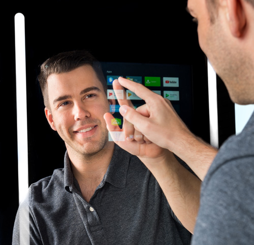

Hardware Setup:
Raspberry Pi or similar microcontroller as the central processing unit.
Two-way mirror or a regular mirror with a display behind it.
Camera module for facial recognition and gesture detection.
Motion sensor to activate the mirror when someone approaches.
Temperature and humidity sensors for environmental monitoring.
Microphone and speakers for voice interaction.
User Interface:
Display time, date, weather, and other relevant information on the mirror's surface.
Customize widgets and modules for news headlines, calendar events, and to-do lists.
Enable voice commands for hands-free control of the mirror's functions.
Implement touch or gesture controls for interactive navigation.
IoT Integration:
Connect the smart mirror to the internet for real-time updates and synchronization.
Integrate with IoT devices like smart thermostats, lights, and security cameras.
Receive notifications from connected devices, such as doorbell rings or motion alerts.
Control IoT devices through the mirror interface, allowing users to adjust settings with a simple touch
or voice command.
Health and Fitness Tracking:
Integrate fitness trackers or health monitoring devices to display workout progress and health metrics.
Reminders for hydration, medication or stretching based on preferences.
Analyze sleep patterns and provide recommendations for better sleep hygiene.
Personalization and Recognition:
Implement facial recognition to identify users and display personalized information.
Customize the interface based on individual preferences such as displaying specific news sources or
calendar events.
Use machine learning algorithms to improve recognition accuracy over time.
Entertainment and Media:
Stream music, podcasts, or news updates through the mirror's speakers.
Display visual content such as YouTube videos, streaming services, or photo slideshows.
Integrate with smart home entertainment systems for seamless control of audio and video playback.
Security & Privacy Measures:
Encrypt communication between the smart mirror and external servers to protect user data.
Allow users to disable or mute microphone and camera functionalities for privacy concerns.
Implement authentication mechanisms to prevent unauthorized access to personal information.
Energy Efficiency & Optimization:
Use motion sensors to activate the mirror only when someone is nearby, conserving energy when not in
use.
Adjust display brightness based on ambient lighting conditions to optimize energy consumption.
Implement power-saving modes to reduce standby power consumption during idle periods.
A smart mirror capstone project based on IoT can offer a multifunctional and immersive
user experience while showcasing the potential of connected devices in everyday life.
Back To Home...